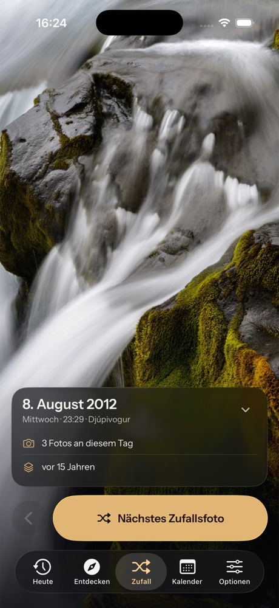
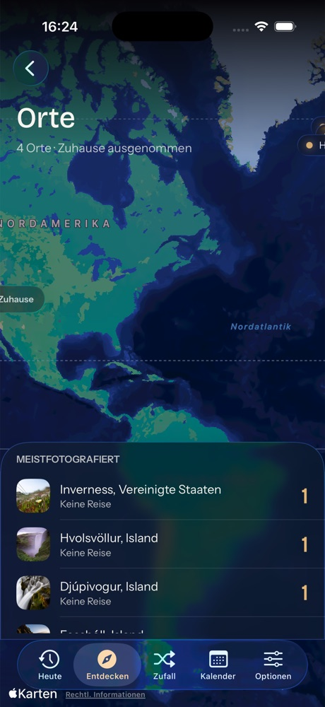
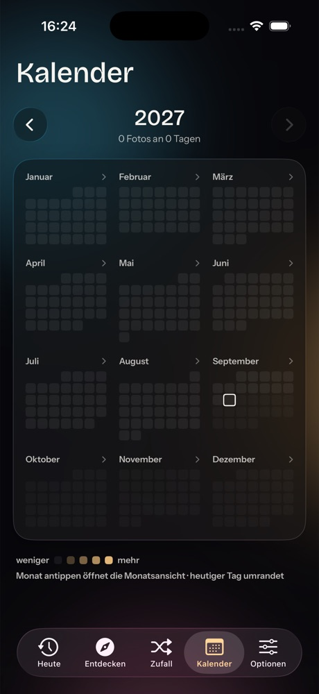
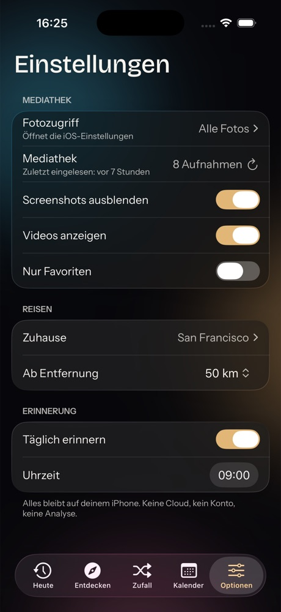

iPhone app
What happened on this day?
Your photos from today one year ago, two years ago, ten. As a look-back, as a story to flip through, as a map of your trips. All from the photos you already have.
Free, no ads, no account.
iPhone, iOS 26 or later.

Your library, reordered.
Today
Every photo and video of this date from every earlier year, sorted by year. Tap the date to jump to any other day.
Flip through
The whole day as a story: chronologically through all years, videos included. Tap for next, hold to pause.
Trips and places
From capture location and date the app recognizes your trips and shows them with route and stations on a map.
Calendar and random
A heatmap of your years, busy days with many photos, and a random photo with facts from its metadata.



Your photos stay on your iPhone.
- No upload. The library is read on the device. There is no server, no account, no analytics.
- Read only. The app changes nothing in your photos, creates no albums and marks no favorites.
- Only the map and place names need internet. For those, map requests and the centre points of your places go to Apple. Everything else works offline.
- No location access. The app only uses the locations stored inside the photos.